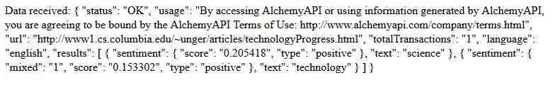

A more detailed analysis of our source
The previous analysis we submitted to AlchemyAPI really included nothing more than the URL of a webpage, so the analysis that was returned was simply an analysis of the document as a whole. AlchemyAPI can perform far more detailed analysis, however. To get this analysis, we have to include additional parameters in our payload, and point the request at a different endpoint. The changes made are shown in the following lines of code, while everything else in our script has remained the same:
var endpoint = "http://gateway-a.watsonplatform.net/calls/url/URLGetTargetedSentiment";
var urlSent = "url=http://www1.cs.columbia.edu/~unger/articles/technologyProgress.html";
var outMode = "outputMode=json";
var targets = "targets=science|technology";
var payload = apiKey + "&" + urlSent + "&" + outMode + "&" + targets;
var totalURL = endpoint + "?" + payload;
req.open("GET", totalURL, true);
Here, we have changed the endpoint to that which is indicated in the documentation, and added two targets to our payload. Instead of examining the sentiment as a whole, the AI will use its natual language processing abilities to determine how the author has written about these specific phrases. The results are as follows:
Now this is an interesting development! Although the overall document sentiment appeared negative, the AI finds that the author writes positively in regard to the specific phrases "science" and "technology". So, we have learned that in order to avoid extermination from our coming robot overlords, it would be wise to write positively about them anywhere they might be able to analyze it.